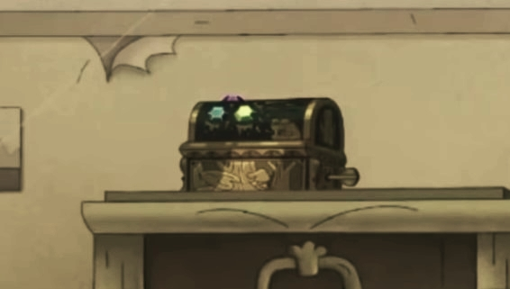

Travel to other worlds
The Calamity Box is a medium‐sized, antique music box ornamented
with gold and three gems of different colors; one green, one blue, and one pink. The gems
represent three key traits, each relating to a member of a certain trio whose fate is predetermined
by a "long‐lost" ancient prophecy. What calamity could this music box possibly bring?
Read more about it here.

Episodes
Season 1
E01 ‐ Anne or Beast? / Best Fronds
E02 ‐ Cane Crazy / Flood, Sweat & Tears
E03 ‐ Hop Luck / Stakeout
E04 ‐ The Domino Effect / Taking Charge
E05 ‐ Anne Theft Auto / Breakout Star
E06 ‐ Girl Time / Sprig vs. Hop Pop
E07 ‐ Dating Season / Anne vs. Wild
E08 ‐ Contagi‐Anne / Family Shrub
E09 ‐ Lily Pad Thai / Plantar's Last Stand
E10 ‐ Toad Tax / Prison Break
E11 ‐ Grubhog Day / Hop Pop and Lock
E12 ‐ Civil Wart / Hop‐Popular
E13 ‐ Trip to the Archives / Croak & Punishment
E14 ‐ Cracking Mrs. Croaker / Snow Day
E15 ‐ A Night at the Inn / Wally and Anne
E16 ‐ Bizarre Bazaar / Family Fishing Trip
E17 ‐ Cursed! / Fiddle Me This
E18 ‐ The Big Bugball Game / Combat Camp
E19 ‐ Children of the Spore / Anne of the Year
E20 ‐ Reunion
Season 2
E01 ‐ Handy Anne / Fort in the Road
E02 ‐ The Ballad of Hopediah Plantar / Anne Hunter
E03 ‐ A Caravan Named Desire / Truck Stop Polly
E04 ‐ Quarreler's Pass / Toadcatcher
E05 ‐ Swamp and Sensibility / Wax Museum
E06 ‐ Marcy at the Gates
E07 ‐ Scavenger Hunt / The Plantars Check In
E08 ‐ Lost in Newtopia / Sprig Gets Schooled
E09 ‐ Little Frogtown / Hopping Mall
E10 ‐ A Day at the Aquarium / The Sleepover to End All Sleepovers
E11 ‐ The Shut-In!
E12 ‐ Night Drivers / Return to Wartwood
E13 ‐ After the Rain / Ivy on the Run
E14 ‐ The First Temple
E15 ‐ New Wartwood / Friend or Frobo?
E16 ‐ Toad to Redemption / Maddie & Marcy
E17 ‐ The Second Temple / Barrel's Warhammer
E18 ‐ Bessie and Micro-Angelo / The Third Temple
E19 ‐ The Dinner / Battle of the Bands
E20 ‐ True Colors
Season 3
E01 ‐ The New Normal
E02 ‐ Hop 'Til You Drop / Turning Point
E03 ‐ Thai Feud / Adventures in Catsitting
E04 ‐ Fight at the Museum / Temple Frogs
E05 ‐ Fixing Frobo / Anne‐sterminator
E06 ‐ Mr. X / Sprig's Birthday
E07 ‐ Spider‐Sprig / Olivia & Yunan
E08 ‐ Hollywood Hop Pop / If You Give a Frog a Cookie
E09 ‐ Froggy Little Christmas
++
Show Info
Click on the links below to read more about the show and fandom.
Show Terms ‐ This page may serve as your guide as you read through the plot.
Plot ‐ A summary of and general information on the plot of the show.
Fandom ‐ Popular show theories, opinions, and observations from the fandom.
Show Terms ‐ Important terms within the show that may cause confusion when read out of context.
Trivia
Nothing to see here... yet. Amphibia Compendium is a summarized
collection of content related to the Disney animated
television series Amphibia. Updated as often as possible,
the creator hopes to keep the content of the site
relevant and up-to-date for all of the Compendium's the readers.
Other Info and Resources
Amphibia Compendium is a summarized
collection of content related to the Disney animated
television series Amphibia. Updated as often as possible,
the creator hopes to keep the content of the site
relevant and up-to-date for all of the Compendium's the readers.